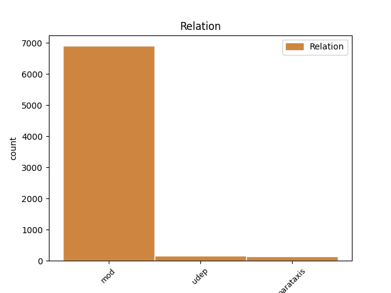
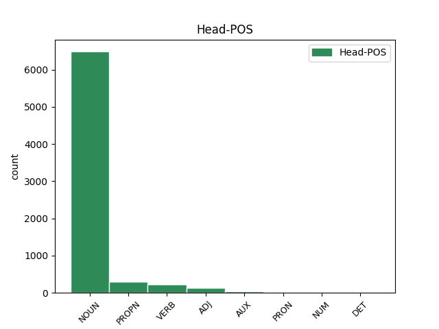
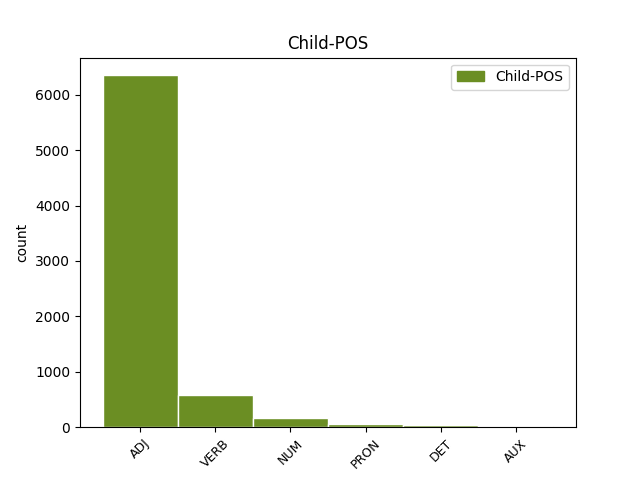

Distribution of features within this leaf



Agreement Rules sorted by frequency.
- When the dependent token is the modifer(mod) of the head token, and the dependent token is ADJ.
1 В _ _ _ _ 0 _ _ _
2 те _ _ _ _ 0 _ _ _
3 годы _ _ _ _ 0 _ _ _
4 в _ _ _ _ 0 _ _ _
5 селе _ _ _ _ 0 _ _ _
6 был _ _ _ _ 0 _ _ _
7 птичник _ _ _ _ 0 _ _ _
8 и _ _ _ _ 0 _ _ _
9 разбит _ _ _ _ 0 _ _ _
10 колхозный колхозный ADJ JJL Case=Nom|Degree=Pos|Gender=Masc|Number=Sing 11 mod _ _
11 сад сад NOUN NN Animacy=Inan|Case=Nom|Gender=Masc|Number=Sing 0 _ _ _
12 . _ _ _ _ 0 _ _ _
1 Он _ _ _ _ 0 _ _ _
2 часто _ _ _ _ 0 _ _ _
3 заявляет _ _ _ _ 0 _ _ _
4 про _ _ _ _ 0 _ _ _
5 заговоры _ _ _ _ 0 _ _ _
6 феминисток _ _ _ _ 0 _ _ _
7 , _ _ _ _ 0 _ _ _
8 утверждая _ _ _ _ 0 _ _ _
9 , _ _ _ _ 0 _ _ _
10 что _ _ _ _ 0 _ _ _
11 последние _ _ _ _ 0 _ _ _
12 -- _ _ _ _ 0 _ _ _
13 воплощение воплощение NOUN NN Animacy=Inan|Case=Nom|Gender=Neut|Number=Sing 0 _ _ _
14 зла _ _ _ _ 0 _ _ _
15 , _ _ _ _ 0 _ _ _
16 стремящееся стремиться VERB VBNL Animacy=Inan|Aspect=Imp|Case=Nom|Gender=Neut|Number=Sing|Tense=Pres|VerbForm=Part|Voice=Act 13 mod _ _
17 править _ _ _ _ 0 _ _ _
18 миром _ _ _ _ 0 _ _ _
19 ( _ _ _ _ 0 _ _ _
20 впоследствии _ _ _ _ 0 _ _ _
21 выясняется _ _ _ _ 0 _ _ _
22 , _ _ _ _ 0 _ _ _
23 что _ _ _ _ 0 _ _ _
24 этим _ _ _ _ 0 _ _ _
25 он _ _ _ _ 0 _ _ _
26 объясняет _ _ _ _ 0 _ _ _
27 свою _ _ _ _ 0 _ _ _
28 усталость _ _ _ _ 0 _ _ _
29 после _ _ _ _ 0 _ _ _
30 близости _ _ _ _ 0 _ _ _
31 со _ _ _ _ 0 _ _ _
32 своей _ _ _ _ 0 _ _ _
33 бывшей _ _ _ _ 0 _ _ _
34 девушкой _ _ _ _ 0 _ _ _
35 за _ _ _ _ 0 _ _ _
36 год _ _ _ _ 0 _ _ _
37 до _ _ _ _ 0 _ _ _
38 основного _ _ _ _ 0 _ _ _
39 сюжета _ _ _ _ 0 _ _ _
40 ) _ _ _ _ 0 _ _ _
41 , _ _ _ _ 0 _ _ _
42 и _ _ _ _ 0 _ _ _
43 прочие _ _ _ _ 0 _ _ _
44 бессмысленности _ _ _ _ 0 _ _ _
45 , _ _ _ _ 0 _ _ _
46 возможно _ _ _ _ 0 _ _ _
47 , _ _ _ _ 0 _ _ _
48 соревнуясь _ _ _ _ 0 _ _ _
49 с _ _ _ _ 0 _ _ _
50 Рин _ _ _ _ 0 _ _ _
51 в _ _ _ _ 0 _ _ _
52 `` _ _ _ _ 0 _ _ _
53 исключительности _ _ _ _ 0 _ _ _
54 '' _ _ _ _ 0 _ _ _
55 . _ _ _ _ 0 _ _ _
1 Цветки _ _ _ _ 0 _ _ _
2 с _ _ _ _ 0 _ _ _
3 тонким _ _ _ _ 0 _ _ _
4 дневным _ _ _ _ 0 _ _ _
5 ароматом _ _ _ _ 0 _ _ _
6 , _ _ _ _ 0 _ _ _
7 около _ _ _ _ 0 _ _ _
8 3,1 3,1 NUM CD Animacy=Inan|Case=Gen|Gender=Masc|Number=Sing|NumType=Card 9 mod _ _
9 см см NOUN NN Animacy=Inan|Case=Gen|Gender=Masc|Number=Sing 0 _ _ _
10 в _ _ _ _ 0 _ _ _
11 диаметре _ _ _ _ 0 _ _ _
12 . _ _ _ _ 0 _ _ _
1 `` _ _ _ _ 0 _ _ _
2 Адад _ _ _ _ 0 _ _ _
3 потомство _ _ _ _ 0 _ _ _
4 храни _ _ _ _ 0 _ _ _
5 '' _ _ _ _ 0 _ _ _
6 ; _ _ _ _ 0 _ _ _
7 dIM _ _ _ _ 0 _ _ _
8 , _ _ _ _ 0 _ _ _
9 MU _ _ _ _ 0 _ _ _
10 , _ _ _ _ 0 _ _ _
11 ŠEŠ _ _ _ _ 0 _ _ _
12 или _ _ _ _ 0 _ _ _
13 mdIM _ _ _ _ 0 _ _ _
14 , _ _ _ _ 0 _ _ _
15 MU _ _ _ _ 0 _ _ _
16 , _ _ _ _ 0 _ _ _
17 ŠEŠ _ _ _ _ 0 _ _ _
18 ) _ _ _ _ 0 _ _ _
19 -- _ _ _ _ 0 _ _ _
20 касситский _ _ _ _ 0 _ _ _
21 царь царь NOUN NN Animacy=Anim|Case=Nom|Gender=Masc|Number=Sing 0 _ _ _
22 Вавилонии _ _ _ _ 0 _ _ _
23 , _ _ _ _ 0 _ _ _
24 правил править VERB VBC Aspect=Imp|Gender=Masc|Mood=Ind|Number=Sing|Tense=Past|VerbForm=Fin|Voice=Act 21 parataxis _ _
25 приблизительно _ _ _ _ 0 _ _ _
26 в _ _ _ _ 0 _ _ _
27 1219 _ _ _ _ 0 _ _ _
28 -- _ _ _ _ 0 _ _ _
29 1188 _ _ _ _ 0 _ _ _
30 годах _ _ _ _ 0 _ _ _
31 до _ _ _ _ 0 _ _ _
32 н. _ _ _ _ 0 _ _ _
33 э _ _ _ _ 0 _ _ _
34 . _ _ _ _ 0 _ _ _
1 После _ _ _ _ 0 _ _ _
2 такого такой DET DT Case=Gen|Gender=Masc|Number=Sing 3 mod _ _
3 успеха успех NOUN NN Animacy=Inan|Case=Gen|Gender=Masc|Number=Sing 0 _ _ _
4 Лыонга _ _ _ _ 0 _ _ _
5 перевели _ _ _ _ 0 _ _ _
6 в _ _ _ _ 0 _ _ _
7 основную _ _ _ _ 0 _ _ _
8 команду _ _ _ _ 0 _ _ _
9 . _ _ _ _ 0 _ _ _
1 Деньги _ _ _ _ 0 _ _ _
2 на _ _ _ _ 0 _ _ _
3 строительство _ _ _ _ 0 _ _ _
4 были _ _ _ _ 0 _ _ _
5 собраны _ _ _ _ 0 _ _ _
6 польской _ _ _ _ 0 _ _ _
7 общиной _ _ _ _ 0 _ _ _
8 , _ _ _ _ 0 _ _ _
9 численность численность NOUN NN Animacy=Inan|Case=Nom|Gender=Fem|Number=Sing 0 _ _ _
10 которой который PRON AWP Animacy=Inan|Case=Gen|Gender=Fem|Number=Sing 9 mod _ _
11 в _ _ _ _ 0 _ _ _
12 Москве _ _ _ _ 0 _ _ _
13 в _ _ _ _ 0 _ _ _
14 конце _ _ _ _ 0 _ _ _
15 XIX _ _ _ _ 0 _ _ _
16 века _ _ _ _ 0 _ _ _
17 достигала _ _ _ _ 0 _ _ _
18 30 _ _ _ _ 0 _ _ _
19 тысяч _ _ _ _ 0 _ _ _
20 человек _ _ _ _ 0 _ _ _
21 , _ _ _ _ 0 _ _ _
22 и _ _ _ _ 0 _ _ _
23 католиками _ _ _ _ 0 _ _ _
24 других _ _ _ _ 0 _ _ _
25 национальностей _ _ _ _ 0 _ _ _
26 по _ _ _ _ 0 _ _ _
27 всей _ _ _ _ 0 _ _ _
28 России _ _ _ _ 0 _ _ _
29 . _ _ _ _ 0 _ _ _
1 Четырежды _ _ _ _ 0 _ _ _
2 выигрывал _ _ _ _ 0 _ _ _
3 турнир турнир NOUN NN Animacy=Inan|Case=Acc|Gender=Masc|Number=Sing 0 _ _ _
4 на _ _ _ _ 0 _ _ _
5 призы _ _ _ _ 0 _ _ _
6 газеты _ _ _ _ 0 _ _ _
7 `` _ _ _ _ 0 _ _ _
8 Московские _ _ _ _ 0 _ _ _
9 новости _ _ _ _ 0 _ _ _
10 '' _ _ _ _ 0 _ _ _
11 ( _ _ _ _ 0 _ _ _
12 1981 1981 ADJ ORD Case=Nom|Degree=Pos|Gender=Masc|Number=Sing 3 parataxis _ SpaceAfter=No
13 , _ _ _ _ 0 _ _ _
14 1983 _ _ _ _ 0 _ _ _
15 , _ _ _ _ 0 _ _ _
16 1984 _ _ _ _ 0 _ _ _
17 , _ _ _ _ 0 _ _ _
18 1986 _ _ _ _ 0 _ _ _
19 ) _ _ _ _ 0 _ _ _
20 . _ _ _ _ 0 _ _ _
1 С _ _ _ _ 0 _ _ _
2 1 _ _ _ _ 0 _ _ _
3 июля _ _ _ _ 0 _ _ _
4 1995 _ _ _ _ 0 _ _ _
5 года _ _ _ _ 0 _ _ _
6 Мари _ _ _ _ 0 _ _ _
7 - _ _ _ _ 0 _ _ _
8 Шанталь _ _ _ _ 0 _ _ _
9 замужем _ _ _ _ 0 _ _ _
10 за _ _ _ _ 0 _ _ _
11 ( _ _ _ _ 0 _ _ _
12 род. родиться VERB VBC Aspect=Perf|Gender=Masc|Mood=Ind|Number=Sing|Tense=Past|VerbForm=Fin|Voice=Act 0 _ _ _
13 1967 1967 ADJ ORD Case=Nom|Degree=Pos|Gender=Masc|Number=Sing 12 udep _ SpaceAfter=No
14 ) _ _ _ _ 0 _ _ _
15 , _ _ _ _ 0 _ _ _
16 с _ _ _ _ 0 _ _ _
17 которым _ _ _ _ 0 _ _ _
18 она _ _ _ _ 0 _ _ _
19 встречалась _ _ _ _ 0 _ _ _
20 3 _ _ _ _ 0 _ _ _
21 года _ _ _ _ 0 _ _ _
22 до _ _ _ _ 0 _ _ _
23 их _ _ _ _ 0 _ _ _
24 свадьбы _ _ _ _ 0 _ _ _
25 . _ _ _ _ 0 _ _ _
1 В _ _ _ _ 0 _ _ _
2 1964 _ _ _ _ 0 _ _ _
3 году _ _ _ _ 0 _ _ _
4 состоялся состояться VERB VBC Aspect=Perf|Gender=Masc|Mood=Ind|Number=Sing|Tense=Past|VerbForm=Fin|Voice=Mid 0 _ _ _
5 дебют _ _ _ _ 0 _ _ _
6 Бобби _ _ _ _ 0 _ _ _
7 Джентри _ _ _ _ 0 _ _ _
8 на _ _ _ _ 0 _ _ _
9 виниле _ _ _ _ 0 _ _ _
10 : _ _ _ _ 0 _ _ _
11 сингл _ _ _ _ 0 _ _ _
12 с _ _ _ _ 0 _ _ _
13 песнями _ _ _ _ 0 _ _ _
14 `` _ _ _ _ 0 _ _ _
15 Ode _ _ _ _ 0 _ _ _
16 to _ _ _ _ 0 _ _ _
17 Love _ _ _ _ 0 _ _ _
18 '' _ _ _ _ 0 _ _ _
19 и _ _ _ _ 0 _ _ _
20 `` _ _ _ _ 0 _ _ _
21 Stranger _ _ _ _ 0 _ _ _
22 in _ _ _ _ 0 _ _ _
23 the _ _ _ _ 0 _ _ _
24 Mirror _ _ _ _ 0 _ _ _
25 '' _ _ _ _ 0 _ _ _
26 был быть AUX VBC Aspect=Imp|Gender=Masc|Mood=Ind|Number=Sing|Tense=Past|VerbForm=Fin 4 parataxis _ _
27 записан _ _ _ _ 0 _ _ _
28 совместно _ _ _ _ 0 _ _ _
29 с _ _ _ _ 0 _ _ _
30 Джоди _ _ _ _ 0 _ _ _
31 Рейнольдс _ _ _ _ 0 _ _ _
32 , _ _ _ _ 0 _ _ _
33 исполнительницей _ _ _ _ 0 _ _ _
34 рокабилли _ _ _ _ 0 _ _ _
35 . _ _ _ _ 0 _ _ _
1 Поблизости _ _ _ _ 0 _ _ _
2 сохраняется _ _ _ _ 0 _ _ _
3 целый _ _ _ _ 0 _ _ _
4 комплекс _ _ _ _ 0 _ _ _
5 археологических _ _ _ _ 0 _ _ _
6 памятников _ _ _ _ 0 _ _ _
7 : _ _ _ _ 0 _ _ _
8 три _ _ _ _ 0 _ _ _
9 неолитических _ _ _ _ 0 _ _ _
10 поселения _ _ _ _ 0 _ _ _
11 ( _ _ _ _ 0 _ _ _
12 III _ _ _ _ 0 _ _ _
13 , _ _ _ _ 0 _ _ _
14 II _ _ _ _ 0 _ _ _
15 тыс. _ _ _ _ 0 _ _ _
16 до _ _ _ _ 0 _ _ _
17 н. _ _ _ _ 0 _ _ _
18 э _ _ _ _ 0 _ _ _
19 . _ _ _ _ 0 _ _ _
20 ) _ _ _ _ 0 _ _ _
21 , _ _ _ _ 0 _ _ _
22 две _ _ _ _ 0 _ _ _
23 стоянки стоянка NOUN NN Animacy=Inan|Case=Gen|Gender=Fem|Number=Sing 0 _ _ _
24 бронзового _ _ _ _ 0 _ _ _
25 века _ _ _ _ 0 _ _ _
26 ( _ _ _ _ 0 _ _ _
27 II _ _ _ _ 0 _ _ _
28 тыс. тысяча NUM NN Animacy=Inan|Case=Gen|Gender=Fem|Number=Sing 23 parataxis _ _
29 до _ _ _ _ 0 _ _ _
30 н. _ _ _ _ 0 _ _ _
31 э _ _ _ _ 0 _ _ _
32 . _ _ _ _ 0 _ _ _
33 ) _ _ _ _ 0 _ _ _
34 и _ _ _ _ 0 _ _ _
35 древнерусское _ _ _ _ 0 _ _ _
36 селище _ _ _ _ 0 _ _ _
37 ( _ _ _ _ 0 _ _ _
38 XII _ _ _ _ 0 _ _ _
39 , _ _ _ _ 0 _ _ _
40 XIII _ _ _ _ 0 _ _ _
41 ) _ _ _ _ 0 _ _ _
42 . _ _ _ _ 0 _ _ _
1 В _ _ _ _ 0 _ _ _
2 середине _ _ _ _ 0 _ _ _
3 июня _ _ _ _ 0 _ _ _
4 1815 _ _ _ _ 0 _ _ _
5 года _ _ _ _ 0 _ _ _
6 великая _ _ _ _ 0 _ _ _
7 княгиня _ _ _ _ 0 _ _ _
8 Екатерина _ _ _ _ 0 _ _ _
9 Павловна _ _ _ _ 0 _ _ _
10 ( _ _ _ _ 0 _ _ _
11 сестра _ _ _ _ 0 _ _ _
12 Александра _ _ _ _ 0 _ _ _
13 I _ _ _ _ 0 _ _ _
14 ) _ _ _ _ 0 _ _ _
15 представила _ _ _ _ 0 _ _ _
16 Леопольда _ _ _ _ 0 _ _ _
17 принцессе _ _ _ _ 0 _ _ _
18 Шарлотте _ _ _ _ 0 _ _ _
19 , _ _ _ _ 0 _ _ _
20 дочери _ _ _ _ 0 _ _ _
21 принца _ _ _ _ 0 _ _ _
22 Уэльского _ _ _ _ 0 _ _ _
23 , _ _ _ _ 0 _ _ _
24 старшего _ _ _ _ 0 _ _ _
25 сына сын NOUN NN Animacy=Anim|Case=Gen|Gender=Masc|Number=Sing 0 _ _ _
26 короля _ _ _ _ 0 _ _ _
27 Георга _ _ _ _ 0 _ _ _
28 III _ _ _ _ 0 _ _ _
29 , _ _ _ _ 0 _ _ _
30 бывшего быть AUX VBNL Animacy=Anim|Aspect=Imp|Case=Gen|Gender=Masc|Number=Sing|Tense=Past|VerbForm=Part|Voice=Act 25 mod _ _
31 регентом _ _ _ _ 0 _ _ _
32 при _ _ _ _ 0 _ _ _
33 душевнобольном _ _ _ _ 0 _ _ _
34 отце _ _ _ _ 0 _ _ _
35 . _ _ _ _ 0 _ _ _
Disagree Examples:
1 Осада _ _ _ _ 0 _ _ _
2 была _ _ _ _ 0 _ _ _
3 снята _ _ _ _ 0 _ _ _
4 , _ _ _ _ 0 _ _ _
5 и _ _ _ _ 0 _ _ _
6 , _ _ _ _ 0 _ _ _
7 преследуя _ _ _ _ 0 _ _ _
8 разбежавшегося _ _ _ _ 0 _ _ _
9 неприятеля _ _ _ _ 0 _ _ _
10 , _ _ _ _ 0 _ _ _
11 Бебутов _ _ _ _ 0 _ _ _
12 успел _ _ _ _ 0 _ _ _
13 захватить _ _ _ _ 0 _ _ _
14 два _ _ _ _ 0 _ _ _
15 орудия _ _ _ _ 0 _ _ _
16 и _ _ _ _ 0 _ _ _
17 два _ _ _ _ 0 _ _ _
18 знамени _ _ _ _ 0 _ _ _
19 , _ _ _ _ 0 _ _ _
20 затем _ _ _ _ 0 _ _ _
21 , _ _ _ _ 0 _ _ _
22 отрядив _ _ _ _ 0 _ _ _
23 , _ _ _ _ 0 _ _ _
24 против _ _ _ _ 0 _ _ _
25 Ахмет _ _ _ _ 0 _ _ _
26 - _ _ _ _ 0 _ _ _
27 бека _ _ _ _ 0 _ _ _
28 генерала _ _ _ _ 0 _ _ _
29 Бурцева _ _ _ _ 0 _ _ _
30 , _ _ _ _ 0 _ _ _
31 нанес нанести VERB VBC Aspect=Perf|Gender=Masc|Mood=Ind|Number=Sing|Tense=Past|VerbForm=Fin|Voice=Act 0 _ _ _
32 неприятелю _ _ _ _ 0 _ _ _
33 30 30 ADJ ORD Case=Gen|Degree=Pos|Gender=Neut|Number=Sing 31 udep _ _
34 апреля _ _ _ _ 0 _ _ _
35 полное _ _ _ _ 0 _ _ _
36 поражение _ _ _ _ 0 _ _ _
37 при _ _ _ _ 0 _ _ _
38 Цурцкабе _ _ _ _ 0 _ _ _
39 . _ _ _ _ 0 _ _ _
1 22 22 ADJ ORD Case=Gen|Degree=Pos|Gender=Neut|Number=Sing 6 udep _ _
2 июня _ _ _ _ 0 _ _ _
3 1987 _ _ _ _ 0 _ _ _
4 года _ _ _ _ 0 _ _ _
5 корабль _ _ _ _ 0 _ _ _
6 начал начать VERB VBC Aspect=Perf|Gender=Masc|Mood=Ind|Number=Sing|Tense=Past|VerbForm=Fin|Voice=Act 0 _ _ _
7 переход _ _ _ _ 0 _ _ _
8 на _ _ _ _ 0 _ _ _
9 Тихоокеанский _ _ _ _ 0 _ _ _
10 флот _ _ _ _ 0 _ _ _
11 с _ _ _ _ 0 _ _ _
12 несением _ _ _ _ 0 _ _ _
13 боевой _ _ _ _ 0 _ _ _
14 службы _ _ _ _ 0 _ _ _
15 в _ _ _ _ 0 _ _ _
16 Персидском _ _ _ _ 0 _ _ _
17 заливе _ _ _ _ 0 _ _ _
18 ( _ _ _ _ 0 _ _ _
19 провёл _ _ _ _ 0 _ _ _
20 22 _ _ _ _ 0 _ _ _
21 судна _ _ _ _ 0 _ _ _
22 в _ _ _ _ 0 _ _ _
23 16 _ _ _ _ 0 _ _ _
24 конвоях _ _ _ _ 0 _ _ _
25 ) _ _ _ _ 0 _ _ _
26 . _ _ _ _ 0 _ _ _
1 Фрэ́нсис _ _ _ _ 0 _ _ _
2 Бэй _ _ _ _ 0 _ _ _
3 ( _ _ _ _ 0 _ _ _
4 ) _ _ _ _ 0 _ _ _
5 , _ _ _ _ 0 _ _ _
6 в _ _ _ _ 0 _ _ _
7 девичестве _ _ _ _ 0 _ _ _
8 -- _ _ _ _ 0 _ _ _
9 Го́ффман _ _ _ _ 0 _ _ _
10 ( _ _ _ _ 0 _ _ _
11 ; _ _ _ _ 0 _ _ _
12 23 _ _ _ _ 0 _ _ _
13 января январь NOUN NN Animacy=Inan|Case=Gen|Gender=Masc|Number=Sing 0 _ _ _
14 1919 _ _ _ _ 0 _ _ _
15 `` _ _ _ _ 0 _ _ _
16 Альберта _ _ _ _ 0 _ _ _
17 , _ _ _ _ 0 _ _ _
18 Канада _ _ _ _ 0 _ _ _
19 -- _ _ _ _ 0 _ _ _
20 15 15 ADJ ORD Case=Nom|Degree=Pos|Gender=Neut|Number=Sing 13 mod _ _
21 сентября _ _ _ _ 0 _ _ _
22 2011 _ _ _ _ 0 _ _ _
23 `` _ _ _ _ 0 _ _ _
24 Лос-Анджелес _ _ _ _ 0 _ _ _
25 , _ _ _ _ 0 _ _ _
26 Калифорния _ _ _ _ 0 _ _ _
27 , _ _ _ _ 0 _ _ _
28 США _ _ _ _ 0 _ _ _
29 ) _ _ _ _ 0 _ _ _
30 -- _ _ _ _ 0 _ _ _
31 канадо-американская _ _ _ _ 0 _ _ _
32 актриса _ _ _ _ 0 _ _ _
33 . _ _ _ _ 0 _ _ _
1 16 16 ADJ ORD Case=Gen|Degree=Pos|Gender=Neut|Number=Sing 7 udep _ _
2 октября _ _ _ _ 0 _ _ _
3 2001 _ _ _ _ 0 _ _ _
4 года _ _ _ _ 0 _ _ _
5 епархия _ _ _ _ 0 _ _ _
6 Виджаявады _ _ _ _ 0 _ _ _
7 вошла войти VERB VBC Aspect=Perf|Gender=Fem|Mood=Ind|Number=Sing|Tense=Past|VerbForm=Fin|Voice=Act 0 _ _ _
8 в _ _ _ _ 0 _ _ _
9 митрополию _ _ _ _ 0 _ _ _
10 Вишакхапатнама _ _ _ _ 0 _ _ _
11 . _ _ _ _ 0 _ _ _
1 После _ _ _ _ 0 _ _ _
2 революции _ _ _ _ 0 _ _ _
3 помимо _ _ _ _ 0 _ _ _
4 кафедры _ _ _ _ 0 _ _ _
5 на _ _ _ _ 0 _ _ _
6 базе _ _ _ _ 0 _ _ _
7 университетских _ _ _ _ 0 _ _ _
8 Высших _ _ _ _ 0 _ _ _
9 географических _ _ _ _ 0 _ _ _
10 курсов _ _ _ _ 0 _ _ _
11 создается _ _ _ _ 0 _ _ _
12 Государственный _ _ _ _ 0 _ _ _
13 географический _ _ _ _ 0 _ _ _
14 институт _ _ _ _ 0 _ _ _
15 , _ _ _ _ 0 _ _ _
16 в _ _ _ _ 0 _ _ _
17 структуре структура NOUN NN Animacy=Inan|Case=Loc|Gender=Fem|Number=Sing 0 _ _ _
18 которого который PRON AWP Animacy=Inan|Case=Gen|Gender=Masc|Number=Sing 17 mod _ _
19 выделялись _ _ _ _ 0 _ _ _
20 географический _ _ _ _ 0 _ _ _
21 и _ _ _ _ 0 _ _ _
22 этнографический _ _ _ _ 0 _ _ _
23 факультеты _ _ _ _ 0 _ _ _
24 . _ _ _ _ 0 _ _ _